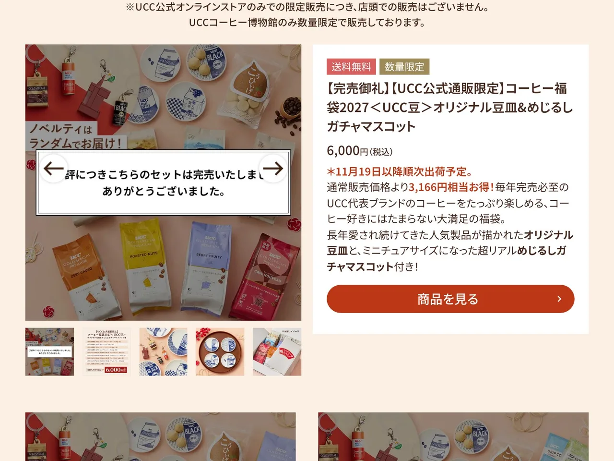
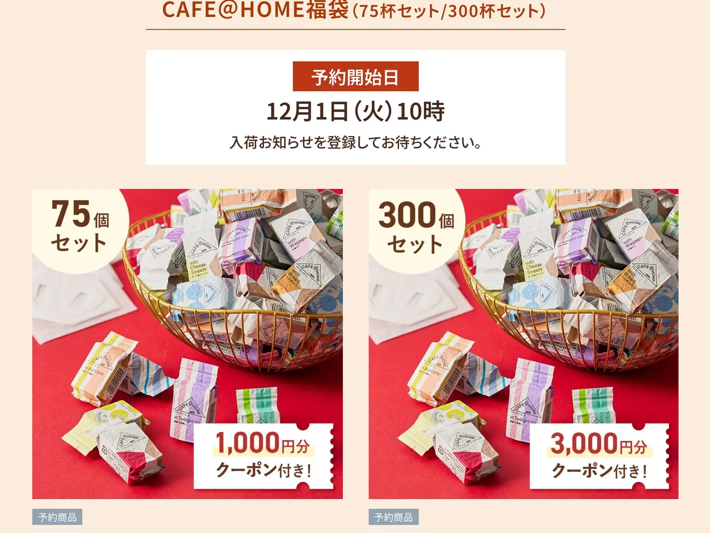

UCC公式通販の福袋2027では、2026年11月22日時点で豆・粉・ワンドリップのUCC福袋3種と上島珈琲店福袋の計4種に完売表示が出ています。別の「CAFE@HOME福袋」は75個入りと300個入りの2種で、公式オンラインストアで12月1日10時に予約受付を始める予定です。
01公式通販で完売した4種と全6種の価格
| 公式通販のセット | 価格（税込） | 11月22日確認の公式案内 |
|---|---|---|
| UCC福袋〈豆〉 | 6,000円 | 完売御礼 |
| UCC福袋〈粉〉 | 6,000円 | 完売御礼 |
| UCC福袋〈ワンドリップ〉 | 6,000円 | 完売御礼 |
| 上島珈琲店福袋 | 5,390円 | 商品ページでSOLD OUT |
| CAFE@HOME福袋75個入り | 12,400円 | 12月1日10時予約開始 |
| CAFE@HOME福袋300個入り | 44,124円 | 12月1日10時予約開始 |
豆・粉・ワンドリップは特集ページで、上島珈琲店福袋は個別の商品ページで完売表示を確認できます。 豆・粉・ワンドリップの3種はいずれもオリジナル豆皿と「めじるしガチャマスコット」が付くセットで、11月19日以降順次出荷予定と案内されています。

02CAFE@HOME福袋の予約期限と中身
75個入り、300個入りともに予約開始は12月1日10時です。 公式発表の予約期間は12月17日までで、数量限定のため期間中に完売する場合があります。公式通販の特集ページには各セットの「入荷お知らせを受け取る」ボタンが掲載されています。予約の開始日時と注文条件は同じ特集ページで確認できます。

75個入りと300個入りにはどちらも17種類のコーヒーが入り、カフェインレスも含みます。付属するスマートドリップコーヒーフィルターは各5枚入りで、75個入りには15点、300個入りには60点です。
違いはコーヒーの数量と付属クーポンです。75個入りには1,000円分、300個入りには3,000円分が付きます。どちらもUCC公式オンラインストアでの次回の買い物に使うクーポンで、公式通販の案内では利用条件は3,000円以上です。出荷は12月18日以降順次の予定です。
注意12月17日は発表上の予約期間の最終日です。数量限定なので、先に受付が終了する場合があります。
03上島珈琲店福袋は商品ページで完売
上島珈琲店福袋には、豆2種とバームクーヘンに加え、神戸タータンのバッグが付きます。 豆は上島珈琲店ブレンド250gとBow-tie’s pour 200gです。焦がしキャラメルのバームクーヘンは5個入りで、1杯分のコーヒー5種とスマートドリップコーヒーフィルターも入ります。特典には銅マグカップを模しためじるしガチャマスコットが付きます。
公式通販での価格は5,390円（税込）です。公式通販限定で、上島珈琲店福袋の商品ページには「SOLD OUT」と表示されています。出荷予定は特集ページで11月19日以降、商品ページで11月21日以降と案内されています。
04よくある質問
CAFE@HOME福袋はいつ出荷されますか？
12月18日以降に順次出荷される予定です。予約は12月1日10時から始まります。
豆のUCC福袋の完売はどこで確認できますか？
UCC公式オンラインストアの2027年特集ページです。同ページでは、豆・粉・ワンドリップがいずれも完売と表示されています。
上島珈琲店福袋はどこで完売を確認できますか？
UCC公式オンラインストアの上島珈琲店福袋の商品ページに「SOLD OUT」と表示されています。公式オンラインストア限定のセットです。
05まとめ
結論公式通販では豆・粉・ワンドリップのUCC福袋と上島珈琲店福袋の計4種が完売です。CAFE@HOMEの2種は12月1日10時から予約の案内があります。
CAFE@HOMEは数量とクーポン額を比較して選びます。予約を検討する際は、公式通販の特集ページで受付状況を確認してください。食品の福袋ではゴディバ福袋2027の案内も参照できます。